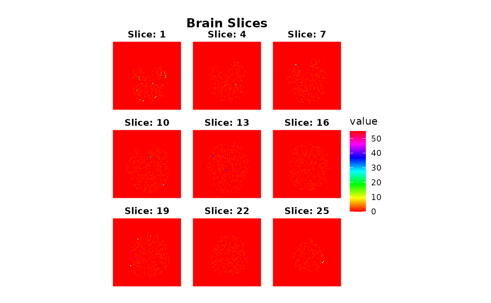
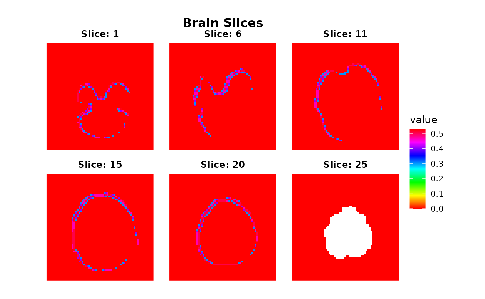
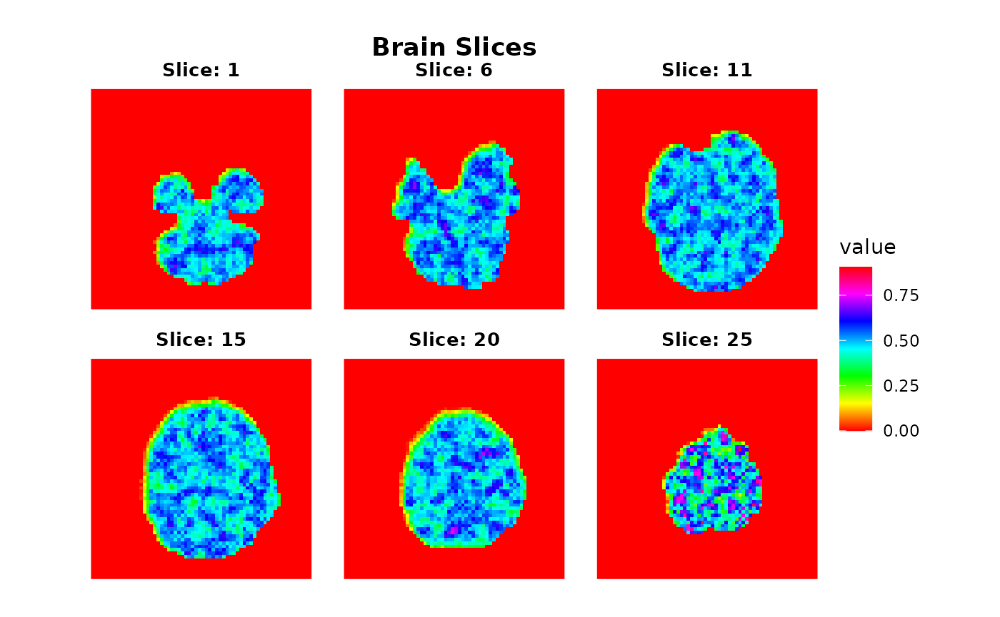
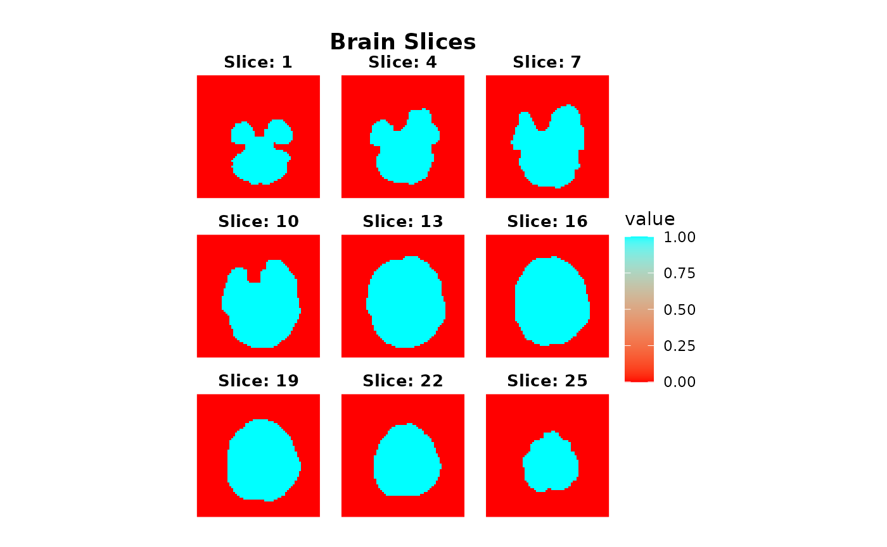

Pipelining operations using a functional approach
The neuroim2 packages provides a set of functions that
allows one to split image data in various ways to processing data split
into parts. By breaking a dataset up into pieces, we can also more
easily parallelize certain operations.
Splitting an image into connected components
First we load in an example volume, assign it random values, and find its connected components with a threshold of .9
library(purrr)
library(ggplot2)
file_name <- system.file("extdata", "global_mask.nii", package="neuroim2")
vol <- read_vol(file_name)
mask.idx <- which(vol>0)
vol2 <- vol
vol2[mask.idx] <- runif(length(mask.idx))
comp <- conn_comp(vol, threshold=.9)
#> Warning in ClusteredNeuroVol(mask, clusters = comps$index[mask > 0]): clustered
#> volume only contains 1 partition
plot(comp$index, zlevels=seq(1,25,by=3), cmap=rainbow(255))
Now we want to find the average value in each of the connected
components using the split_clusters function. Since
conn_comp returns a ClusteredNeuroVol
containing the cluster indices, we use that to split the original volume
into a list of ROIVols and compute the mean over each
one.
mvals <- vol2 %>% split_clusters(comp$index) %>% map_dbl( ~ mean(.))Suppose we want to compute the local standard deviation within a 4mm
radius of each voxel. We can use the searchlight function
to construct a list of spherical ROIs centered on every voxel in the
input set.
sdvol <- vol %>% searchlight(radius=5, eager=TRUE) %>% map_dbl( ~ sd(.))
sdvol <- NeuroVol(sdvol, space=space(vol), indices=which(vol!=0))
plot(sdvol, cmap=rainbow(255))
Another thing we might to is compute the k nearest neighbors in each searchlight and replace the center voxel with the average intensity of its neighbors:
k <- 12
knnfvol <- vol %>% searchlight(radius=12, eager=TRUE) %>% map_dbl(function(x) {
ind <- order((x[x@center_index] - x)^2)[1:k]
mean(x[ind])
}) %>% NeuroVol(space=space(vol), indices=which(vol!=0))
plot(knnfvol, cmap=rainbow(255), zlevels=seq(1,25,by=3))
If we only need access to the searchlight coordinates (in voxel
space), we can use the searchlight_coords function. Here,
we simply replace the center voxel with the average of its neighbors in
searchlight space:
avgvol <- vol %>% searchlight_coords(radius=12) %>% map_dbl(function(x) {
vals <- vol[x]
mean(vals[vals!=0])
}) %>% NeuroVol(space=space(vol), indices=which(vol!=0))
plot(avgvol, cmap=rainbow(255), zlevels=seq(1,25,by=3))
Mapping a function over every slice of a NeuroVol
Suppose we want to split up an image volume by slice and apply a
function to each slice. We can use the slices function to
achieve this as follows: